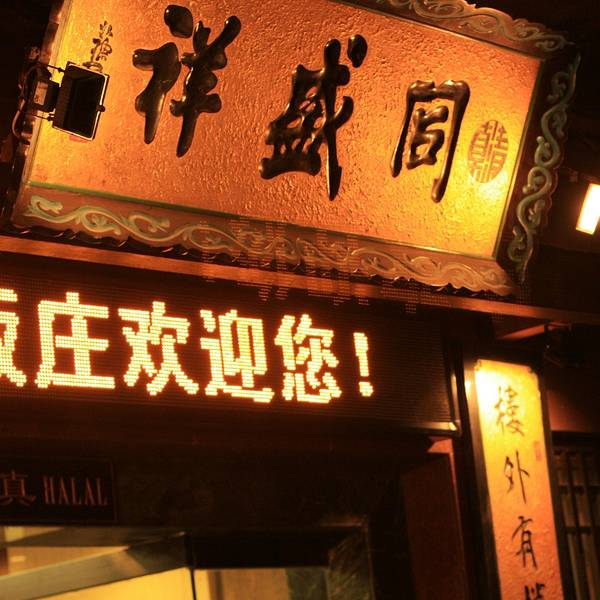
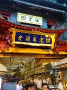
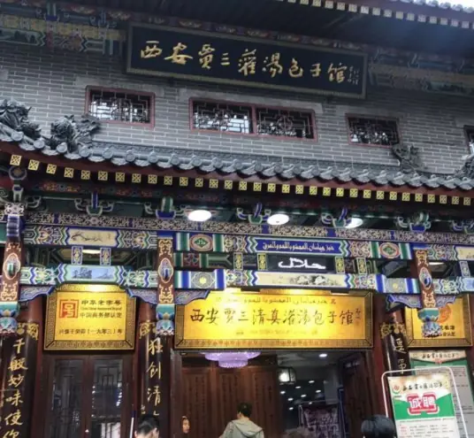

西安老字号 · 百年传承的美食记忆
一、老字号概述
- 老字号是指历史悠久、拥有世代传承的产品、技艺或服务，具有鲜明的中华民族传统文化背景和深厚的文化底蕴
- 西安作为十三朝古都，拥有30余家中华老字号及西安老字号餐饮品牌
- 涵盖牛羊肉泡馍、肉夹馍、饺子宴、葫芦头、腊汁肉、灌汤包等特色品类
- 其中“同盛祥牛羊肉泡馍制作技艺”、“德发长饺子宴”等已列入国家级、省级非物质文化遗产名录
老字号认定标准：
- 品牌创立50年以上（含50年）
- 具有世代传承的产品、技艺或服务
- 具有中华民族特色和鲜明的西安地域文化特征
- 具有良好信誉，得到社会广泛认同
二、代表性老字号
同盛祥 · 牛羊肉泡馍（中华老字号）

同盛祥 · 泡馍
同盛祥饭庄由张文祥、马振邦、王化民等人于1920年合伙创办，至今已有百余年的历史，是西安餐饮界当之无愧的“老字号”。同盛祥主营牛羊肉泡馍，其泡馍制作技艺于2008年被列入国家级非物质文化遗产名录，是西安泡馍界的金字招牌。招牌菜：牛羊肉泡馍、烩菜、酱牛肉。店内至今保留着传统泡馍做法——“馍要自己掰、肉要自己选、汤要原锅出”。
德发长 · 饺子宴（中华老字号）
德发长 · 饺子宴
德发长由山西人赵德发于1936年在西安钟楼旁创立。当时仅是一家经营水饺的小铺子，因馅料鲜美、皮薄馅大而深受欢迎。德发长以“饺子宴”闻名中外，先后开发出318种饺子，造型各异、馅料丰富，被誉为“千古风味、一饺百态”。招牌菜：太后火锅饺子、水晶饺子、贵妃鸡饺。
樊记腊汁肉 · 肉夹馍（中华老字号）
樊记 · 腊汁肉夹馍
樊记腊汁肉由樊炳仁于1904年（清光绪三十年）在西安南院门创立。如今已传承五代，是西安肉夹馍的“金字招牌”。樊记的腊汁肉老汤已有百年历史，从不间断。其肉夹馍讲究“外酥里嫩、肥而不腻、瘦而不柴”。招牌菜：腊汁肉夹馍、腊汁肉拌面、腊汁肉揪面片。
老孙家 · 羊肉泡馍（中华老字号）

老孙家 · 羊肉泡馍
老孙家由孙广贤于1898年（清光绪二十四年）在西安桥梓口创立，至今已有120余年历史。最早在桥梓口摆摊卖泡馍，因汤醇肉烂、服务热情，逐渐成为西安泡馍代表。招牌菜：羊肉泡馍、牛肉泡馍、小炒泡馍。曾接待过多位国家元首和外国政要，被誉为“天下第一碗”。
贾三灌汤包 · 灌汤包（中华老字号）

贾三 · 灌汤包
贾三灌汤包由贾志亮（贾三）于1980年在西安回民街创立。虽然与明清老字号相比历史较短，但因其“皮薄、馅大、汤多”的独特风味，迅速成为西安美食名片。贾三在传统灌汤包基础上改良，研制出牛肉、羊肉、素菜、三鲜等多种馅料，满足不同食客口味。招牌菜：牛肉灌汤包、羊肉灌汤包、八宝粥。
春发生 · 葫芦头（中华老字号）
春发生 · 葫芦头
春发生由张氏兄弟于1920年在西安南院门创立。初名“春和发”，后请当地名士祝世长题写“春发生”招牌，取“春日发生、生意兴隆”之意。春发生以“葫芦头泡馍”闻名。葫芦头即猪大肠头，经十几道工序处理，去腥留香。汤底用猪骨、鸡架熬制，汤色乳白、香气浓郁。招牌菜：葫芦头泡馍、梆梆肉、九碗十三花。
三、老字号地图（建议打卡路线）
- 钟楼商圈：德发长（饺子宴）→ 同盛祥（泡馍）→ 樊记腊汁肉（肉夹馍）
- 回民街：老孙家（泡馍）→ 贾三灌汤包（灌汤包）→ 春发生（葫芦头）
- 东大街：西安饭庄（陕菜）→ 五一饭店（小吃）→ 白云章（饺子）
- 南门周边：老孙家（南门店）→ 樊记腊汁肉（南大街店）
四、老字号必吃美食推荐
- 同盛祥：牛羊肉泡馍、酱牛肉、酸梅汤
- 德发长：太后火锅饺子、贵妃鸡饺、珊瑚饺子
- 樊记腊汁肉：腊汁肉夹馍、腊汁肉揪面片、腊汁肉拌面
- 老孙家：羊肉泡馍、小炒泡馍、清真八大碗
- 贾三灌汤包：牛肉灌汤包、羊肉灌汤包、八宝粥
- 春发生：葫芦头泡馍、梆梆肉、温拌腰丝
五、老字号的文化价值
- 历史价值：见证了西安城市发展和商业变迁
- 文化价值：承载了陕西饮食文化和民俗传统
- 技艺价值：保存了传统的烹饪技艺和制作工艺
- 社会价值：维系着城市记忆和市民情感
- 经济价值：带动了西安餐饮旅游产业发展
六、温馨提示
- 老字号店铺用餐高峰期（11:30-13:30、18:00-20:00）排队时间较长，建议错峰前往
- 部分老字号（如老孙家、同盛祥）可提前电话预约包间
- 回民街老字号多为清真食品，请尊重民族饮食习惯
- 老字号店铺多位于钟楼、回民街、东大街附近，可步行或乘坐地铁前往
- 建议每餐只品尝1-2家老字号，以免吃撑影响体验